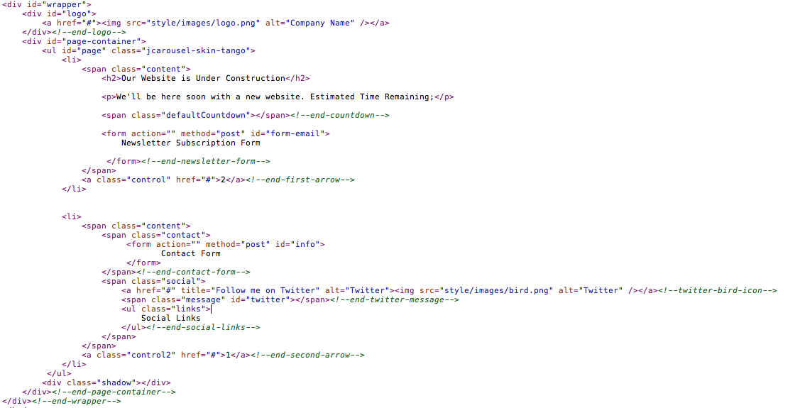

Created: 4/27/2010
By: elemis
Email: Contact Form
Thank you for purchasing this theme. If you have any questions that are beyond the scope of this help file, please feel free to email via my user page contact form here. Thanks so much!
This theme is a fixed layout with two sections. All of the information within the main content is nested within a div with an id of "page-container". Two of the sections are nested within an unordered list with an id of "page". Here is the general structure.
If you would like to edit the color, font, or style of any elements in one of these columns, you would do the following:
#page a {
color: #someColor;
}
If you find that your new style is not overriding, it is most likely because of a specificity problem. Scroll down in your CSS file and make sure that there isn't a similar style that has more weight.
I.E.
#wrapper #page a {
color: #someColor;
}
So, to ensure that your new styles are applied, make sure that they carry enough "weight" and that there isn't a style lower in the CSS file that is being applied after yours.
Four CSS files are used in this theme. The first one is a generic reset file. Many browser interpret the default behavior of html elements differently. By using a general reset CSS file, we can work round this. This file also contains some general styling, such as anchor tag colors, font-sizes, etc. Keep in mind, that these values might be overridden somewhere else in the file.
ie.css and ie8.css are for fixing the problems that are caused by some earlier versions of Internet Explorer.
The fourth file (blue.css, green.css, red.css, yellow.css, purple.css) contains all of the specific stylings for the page. The file is separated into sections using:
/* === Layout === */ some code /* === Countdown === */ some code /* === Contact Form === */ some code /* === Validation === */ some code /* === Newsletter === */ some code /* === Social === */ some code /* === Twitter === */ some code etc, etc.
If you would like to edit a specific section of the site, simply find the appropriate label in the CSS file, and then scroll down until you find the appropriate style that needs to be edited.
If you would like to change the color scheme of the theme with the existing alternatives, you just have to change the name of the .css file under style.css.
@import "style/css/green.css";
The example above uses green color scheme. If you would like to use blue, you should replace the code with:
@import "style/css/blue.css";
This theme imports six Javascript files.
j(function () {
var newYear = new Date();
newYear = new Date(YYYY, MM - 1, DD);
j('.defaultCountdown').countdown({until: newYear});
});
For further usage tips of the script you can get help from here
getTwitters('twitter', {
id: 'YOUR TWITTER ID',
count: 1,
enableLinks: true,
ignoreReplies: false,
template: '%text% - %time%',
newwindow: true
});
For further usage tips of the script you can get help from here
I've included two psds with this theme:
The psd files were creating using 960.gs grid system. They are labeled, layered, grouped and easily editable. If you make any adjustments, slicing will be easy.
I've used the following images, icons or other files as listed.
$EmailTo = "yourname@domain.com";Replace the quoted sample address with your email address.
Once again, thank you so much for purchasing this theme. As I said at the beginning, I'd be glad to help you if you have any questions relating to this theme. No guarantees, but I'll do my best to assist. If you have a more general question relating to the themes on ThemeForest, you might consider visiting the forums and asking your question in the "Item Discussion" section.
elemis